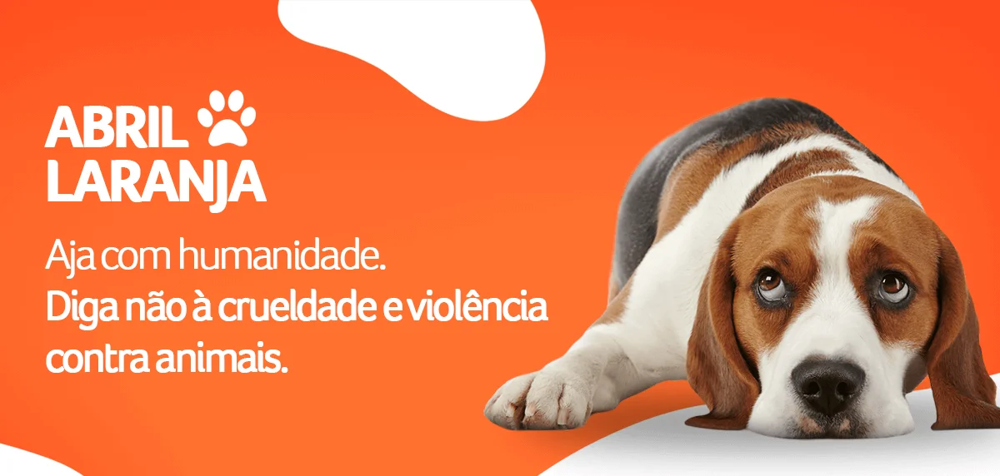

🐾 Abril LaranjaConscientização contra a crueldade animal |
|
|
Campanhas ONGs Leis Sobre |
O que é o Abril Laranja?O Abril Laranja é uma campanha internacional de combate aos maus-tratos contra os animais. Esse movimento busca conscientizar as pessoas sobre a importância de respeitar, proteger e cuidar dos animais.  Alunos: Tiago de Oliveira Miguel e Nicollas Barbosa Cavalli |
| Projeto Escolar 2026 | |